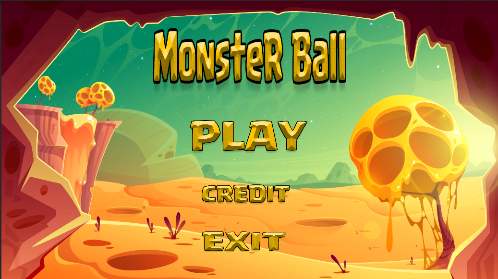
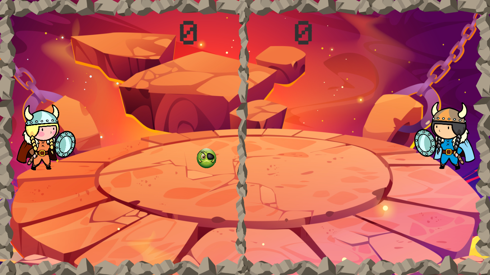
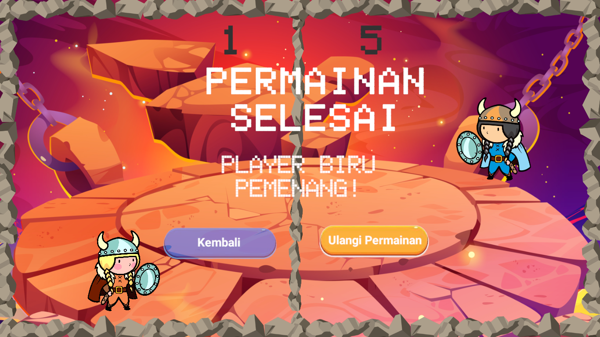
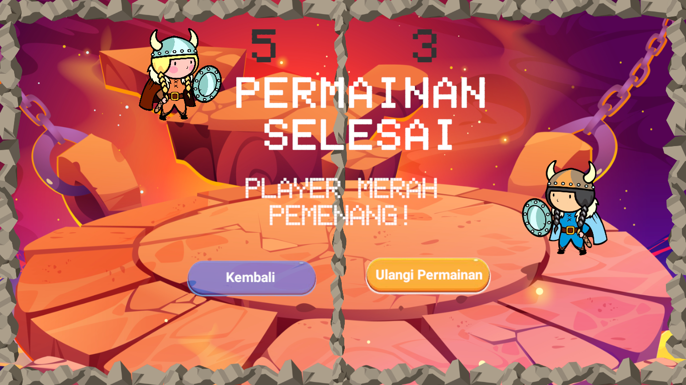
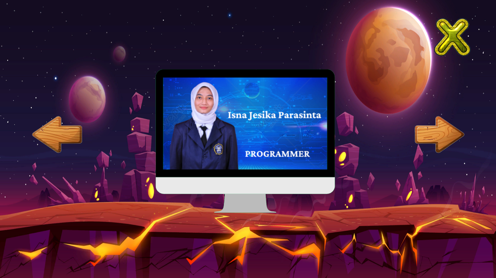
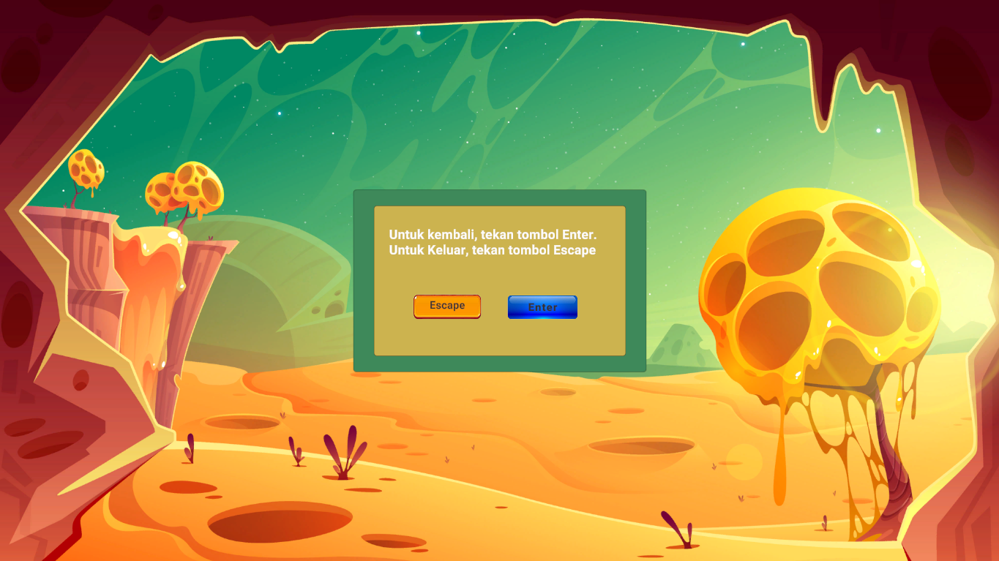

Game 2D dengan 2 Player
Projek "Monster Ball" adalah permainan yang dirancang untuk dua pemain, di mana setiap pemain mengendalikan
karakternya sendiri dalam sebuah arena atau lingkungan yang mungkin penuh dengan rintangan dan tantangan. Berikut adalah
deskripsi umum tentang projek "Monster Ball" Anda:
- Tata Cara Permainan:
- Kedua Player harus berlomba-lomba memasukan bola ke batas lawan hingga score mencapai 5, player tersebut dinyatakan menang.
- Player dapat menggerakan Hero mereka baik ke atas - bawah, kanan-atas, untuk memukul bola.





